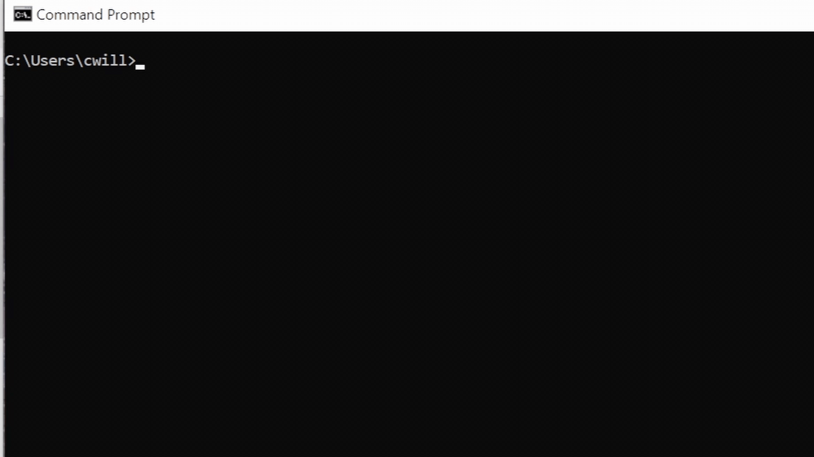
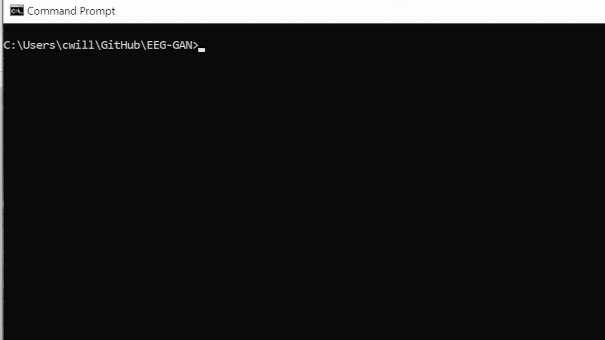
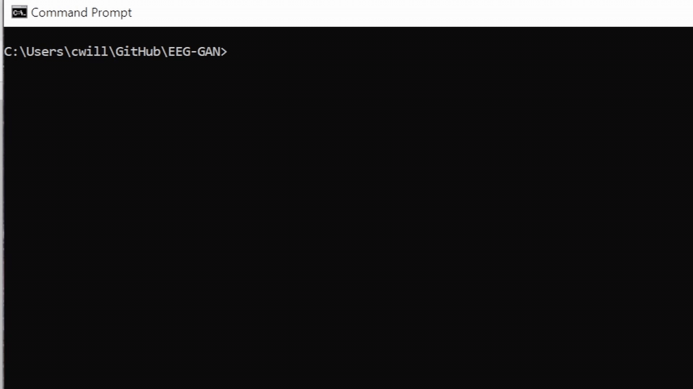
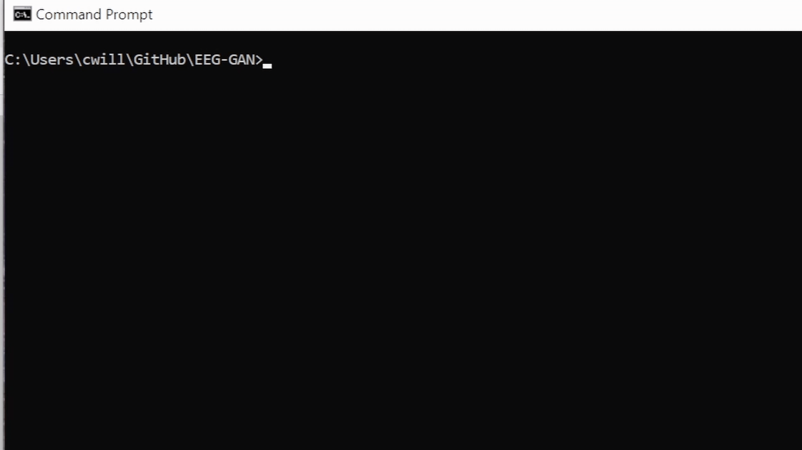
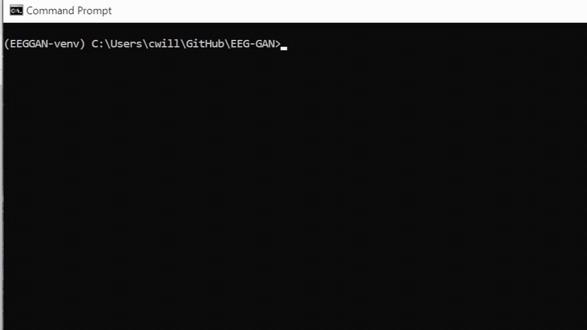

Install
These instructions are for developpers to install the repo locally.
These instructions are out of date and do not reflect the changes that came with releasing the package as a pip
Pre-Requirements:
Setting Up the Package:
- Open your terminal
Named Terminal on Macs and Command Line in Windows/Linux

- Navigate to the desired directory, for example:
cd GitHub/gansEEG
 - Clone the GAN package repository:
git clone https://github.com/AutoResearch/GAN-in-Neuro.git
 - Create a virtual environment:
python -m venv EEGGAN-venv
 - Activate the environment
For Windows:EEGGAN-venv\Scripts\activate
For Mac/Linux:source EEGGAN-venv/bin/activate
 - Install dependencies
pip install -r GAN-in-Neuro/requirements.txt
